GT Scheduler
Duration
Feb - Apr 2021 (3 months)
Team
Product Manager, Engineering Manager, 2 Designers, 8 Developers
Role
User Research, UI/UX Design
Tools
Figma
GT Scheduler: Improving the course registration process
Course registration is a stressful experience for many students at Georgia Tech, exacerbated by the school’s outdated registration platform. To improve the registration process, GT Scheduler, a third-party registration tool developed by student Jason Park, provides a variety of features that allow students to plan out a course schedule, decide between professors and class sections, and preview information about a course.
The team
I worked on improving this scheduler as a part of a cross-functional team in Bits of Good, a student organization that helps develop powerful web apps for nonprofits but also works on student-focused projects. Our team of one product manager, one engineering manager, two designers, and eight developers worked for one semester to make improvements and add new features to the scheduler.
Existing features
Currently, GT Scheduler features two main views:
New features by our team
While GT Scheduler currently provides basic tools for schedule planning, our team wanted to add new features to further streamline this process. Over the semester, we worked on three new features:
1. Course catalog
The primary feature our team worked on was the course catalog, where students can search for courses and view detailed course information. This combines features of our school’s official course catalog, which has an outdated, difficult-to-navigate interface, with other common tools that students use for registration. By integrating the catalog in GT Scheduler, students would have a centralized platform to not only plan schedules but also research the courses they want to take.
A centralized space for course details
The course catalog consolidates essential course information, such as:
- a course description,
- prerequisites,
- grade breakdowns for the entire course and individual professors,
- the number of seats available in a course's sections and waitlist, and
- location and times of each section,
in an easy-to-navigate space.
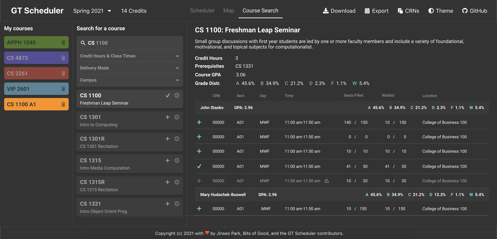Advanced searching and filtering capabilities
To make it easier to find the specific course students want, the catalog has an advanced filtering system to filter by credit hours, class times, delivery mode, and campus location.
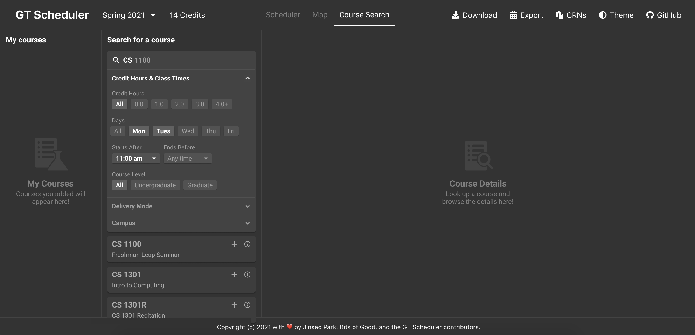Identifying user needs
The idea of a course catalog came from the previous team that worked on GT Scheduler, who observed that students cross-referenced 2-3 different resources while scheduling. To delve further into this issue, my design partner and I interviewed six Georgia Tech students regarding information they look for during registration, resources they currently use, and how they might utilize a course catalog. Based on their responses, we identified the general preferences and needs of our target users.
Preferences of a typical student
Based on the interviews, we constructed an archetype of how a typical student approaches registration.
Registration Process: The student typically has a flexible 4-year plan laid out for core courses, but is willing to explore different electives. Likewise, when registering, they first look for core courses, then choose other courses based on availability. They prioritize:
- good professors
- class style and difficulty (such as the average course GPA and the professor’s teaching style)
- course prerequisites
Tools and Functions: Common tools they use for registration include:
- OSCAR: the official Georgia Tech registration platform that displays course times, availability, prerequisites, and credit hours
- Course Critique: displays the historical GPA for each course and each professor
- Rate My Professors/Reddit: places where students leave reviews about their professors
- DegreeWorks: where students go to see if their courses meet the requirements for their major
User needs
From these interviews, we also identified four main needs that our course catalog should fulfill.
Looking at related tools and what other schools do
In addition to identifying user needs, we also analyzed common registration tools brought up in the user interviews and reached out to students at other schools to ask about their schedulers. We then evaluated potential features we could refine and integrate into GT Scheduler.
OSCAR
OSCAR is the official Georgia Tech platform for registration. For each course, students can view a table of all course sections and course details. While it contains a lot of detailed information, the outdated interface and difficult navigability are frustrating for students to use.
Course Critique
Course Critique compiles the historical course GPAs of all Georgia Tech courses and professors. Many students rely on this to evaluate the difficulty of their courses.
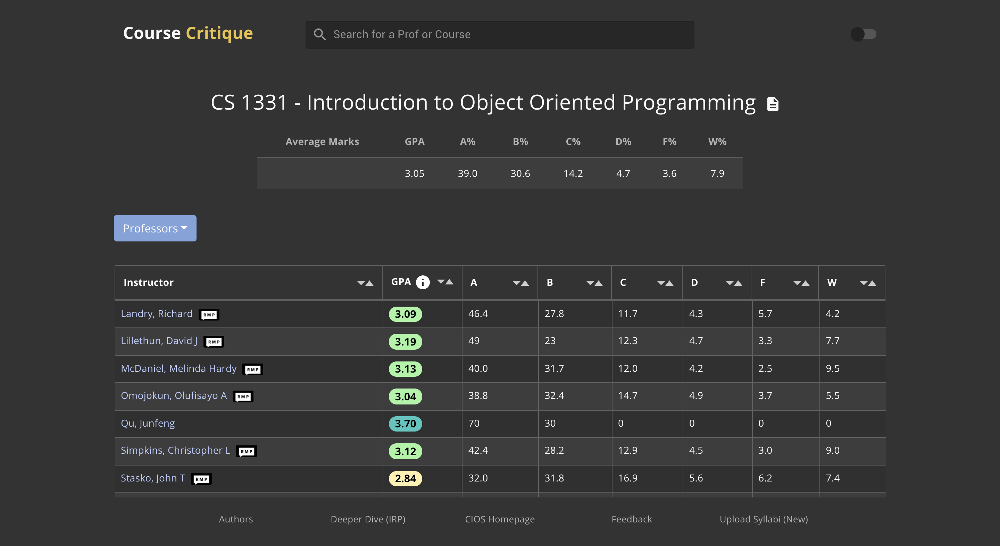Penn Course Plan
Penn Course Plan is a student-created scheduler for the University of Pennsylvania. The scheduler is broken down into three sections: course search and details, a list of courses to add to the schedule, and a calendar. This interface effectively condenses a course catalog and calendar view on one screen.
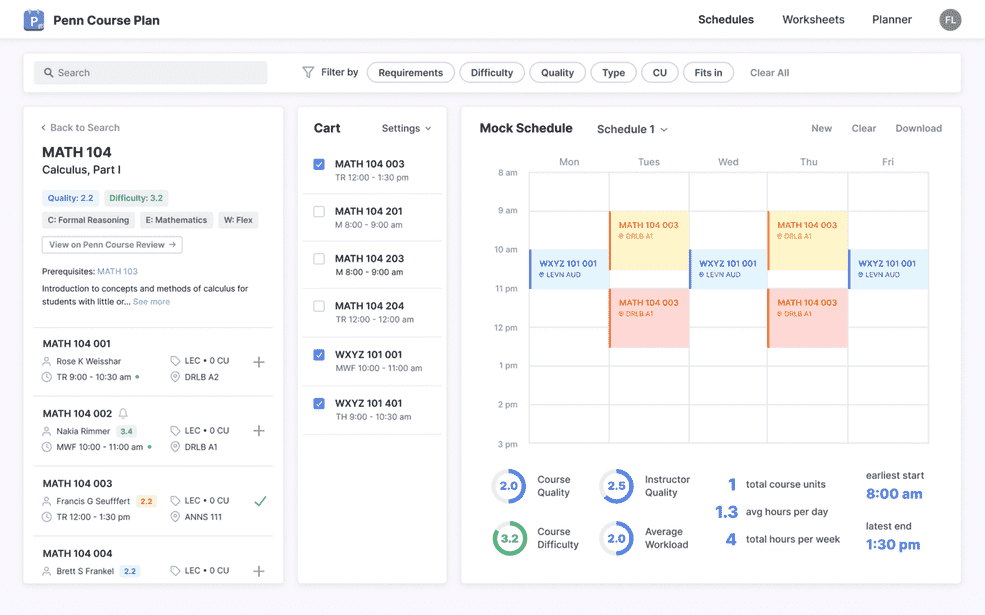QuACS
Like Penn Course Plan, QuACS is a student-created scheduler for Rensselaer Polytechnic Institute. It has a separate course catalog that lists out course descriptions and course sections, and courses can be added to the calendar view directly via the catalog.
The drawing board
Wireframes
With a better understanding of potential features for the catalog, we started brainstorming ideas for the page’s layout, grouped into three ways to present information.
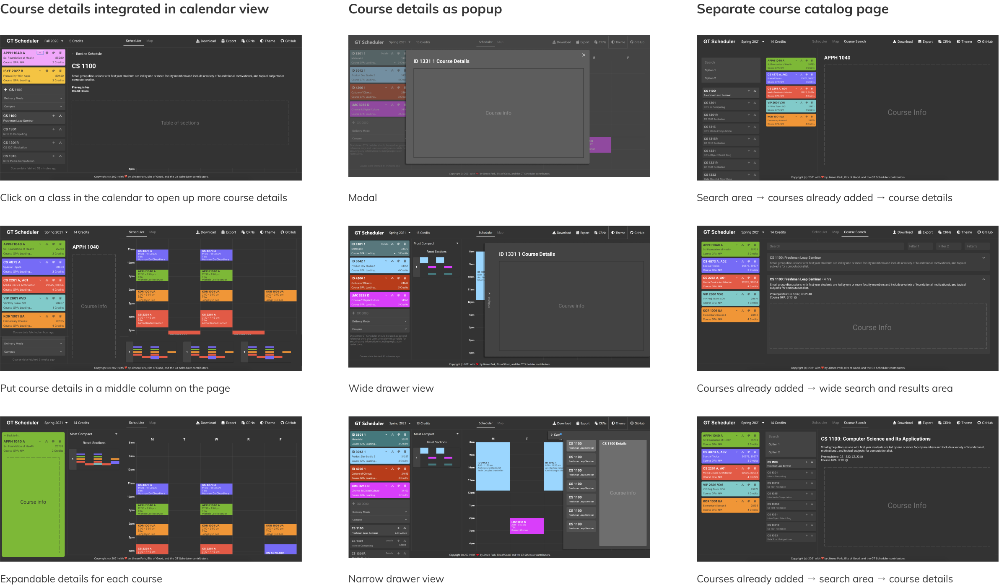User Flow
To clarify to ourselves and our developers how users would navigate through the catalog, we created and updated a user flow throughout this project, focusing on the searching and filtering functionalities.
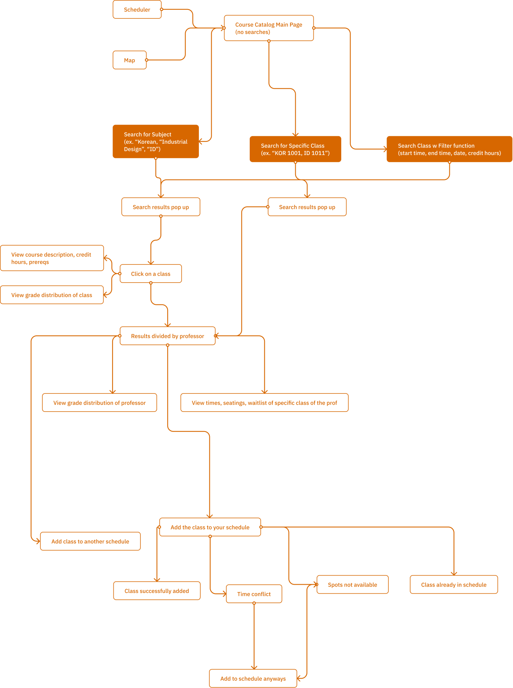A second opinion
While designing the wireframes and user flow, our team had some doubts about whether or not a separate course catalog page was necessary in the first place. We felt that course information could be condensed or displayed as a popup in the current calendar view of GT Scheduler without the need for a separate course catalog.
We asked users from the previous interviews on their thoughts on the two different ways to display information, one using the catalog and one without the catalog.
The interviewees still preferred the separate course catalog. They saw themselves using the calendar view and catalog view for two distinct tasks, organizing class times versus learning about courses, and preferred the visual ease and clean design of an isolated catalog.
Iterations
With the user feedback in mind, we continuously refined our designs for a standalone catalog page. We sought feedback on our designs through weekly design critiques with other designers in Bits of Good and a mid-semester demo to the organization’s product team.
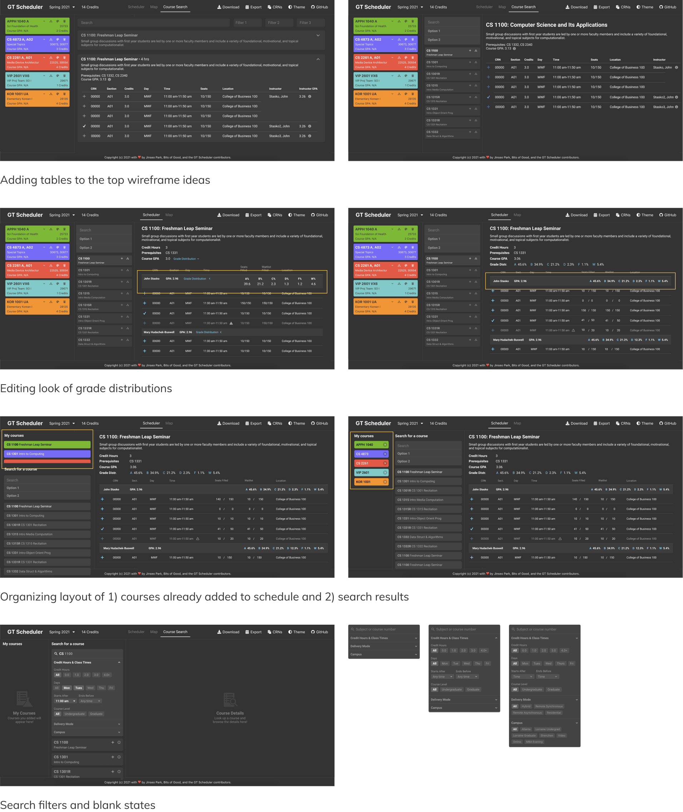The final solution
Through multiple iterations, we refined our design to meet the user needs we identified at the user research phase.
Students should be able to view basic information like course prerequisites, number of credit hours, and class location.
This information is condensed into tables that reflect the familiar interface of Georgia Tech’s official registration platform, but with a much cleaner look to help students quickly spot the information they need.
Students should have information to help them choose between different professors and course sections based on difficulty and class times.
The page displays historical GPAs and grade breakdowns for entire courses and specific professors, and the table view makes it easy to compare class times.
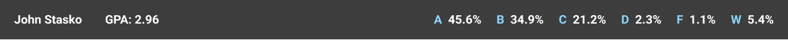Students should be able to easily identify when courses have conflicting times.
Course sections that conflict with a student’s current schedule are grayed out.
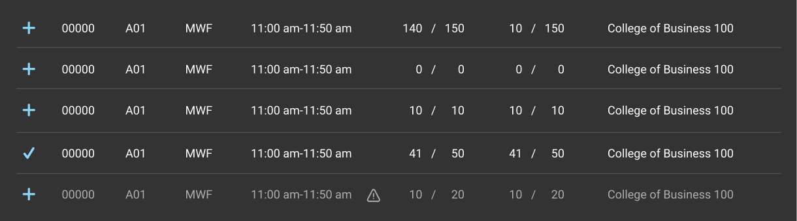Students should be able to search and filter for courses based on time, location, and other preferences.
Users can expand the search bar to access specific search filters like class times, credit hours, delivery mode, and campus location.
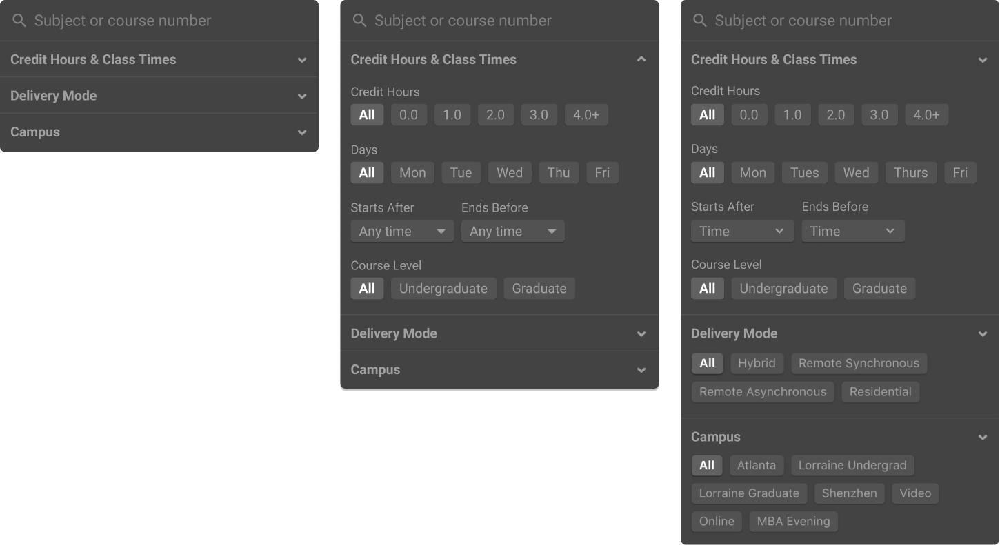Future features for the catalog
The catalog designs successfully tackle the basic needs of researching courses. In order to make this an even more comprehensive platform for course registration, our team brainstormed some future features for the catalog.
Based on common tools and resources that students use for course registration:
Other features:
2. Feedback Widget
Previously, to collect feedback on GT Scheduler, our team relied on a combination of Google Analytics, Google Forms, and word of mouth. For our second project, we looked into a more direct way to encourage and collect this feedback.
Ideation
We identified two elements needed in the feedback widget: one rating system to measure the scheduler's performance, and one for users to leave text comments. We mocked up a few ways to display these fields.
Final design
Users can select the feedback button on the bottom right of the scheduler page to open up the feedback form.
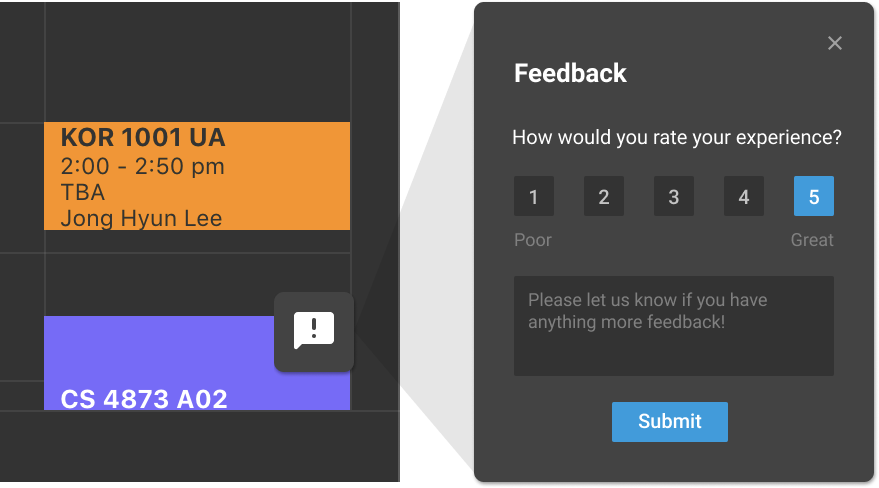Not long after we implemented the feedback form, we received 30+ responses from students, including feature suggestions, bug reports, and descriptions of pain points we could use in future improvements to the scheduler.
3. Multiple schedules
A lot of students had requested for the ability to create multiple schedules for their alternative plans. We added a small functionality for creating, deleting, and renaming new schedules.
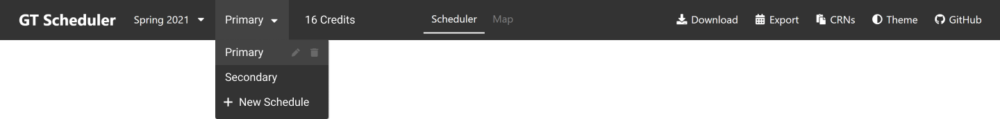Closing thoughts
This project was one of my first times working in a cross-functional team, where tasks were clearly divided between product ideation and management, design, and development. I initially enjoyed the isolated nature of my role, that I could focus purely on design work while the rest of my team worked on other tasks. However, I quickly realized that despite the isolated roles, cross-functional teams are still strongly collaborative. I began working more with the product manager to discuss user needs and product requirements, and with the engineering manager and developers to understand the feasibility of our designs. This project helped me gain a better understanding of my role as a designer—the bridge between product and engineering—and helped prepare me for my Lacework internship that summer where I played a similar role in my team. This was a great start to my experience as a designer at Bits of Good, and I definitely got to grow a lot working on a real-world project with a direct impact on the students around me.
Let's get in touch!